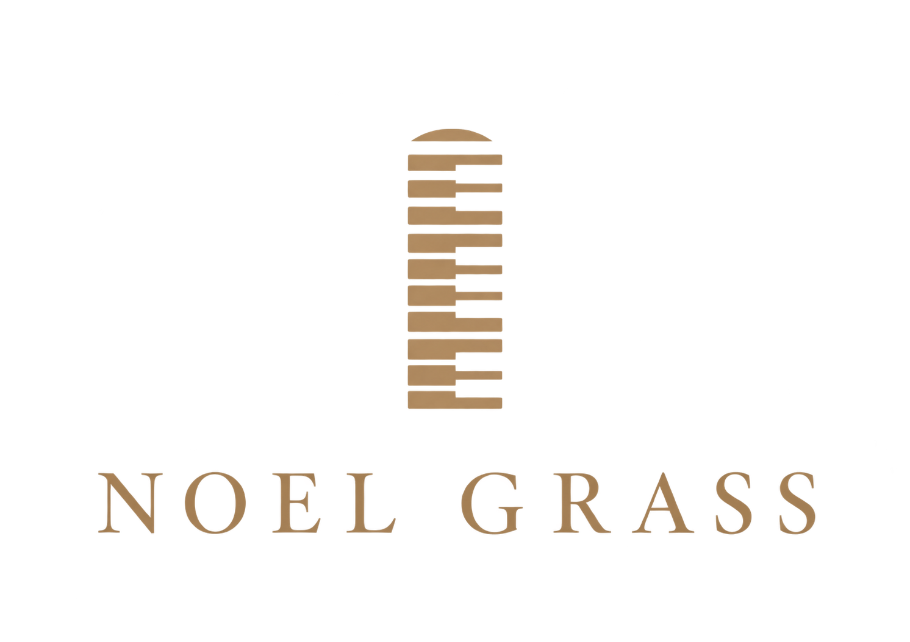

I am Noel Grass, an Architect of Sound. I translate cinematic stories into sound and human feeling into sonic space. With two decades at the piano and over ten years in the industry, my practice as a professional film composer, pianist, and music producer based in Nairobi, Kenya is built on a single law: emotion directs the architecture.
This isn't about style — it's about necessity. Some stories require restrained stillness; others demand expressive movement. My role is to build the precise sonic space that the visual narrative requires.
Gallery: The Scored SceneThis work exists to serve visual narrative as an original film composer. It is an act of shared vision, translating the emotional core of independent films, feature lengths, and documentaries into intentional sound. The goal is clarity for the motion picture soundtrack to function as an unseen character within the frame.
Notable Filmography & Soundtracks — Lost in Time (2019) Feature Film (Award Winner for Best Feature Film) — Atmospheric World-Building & OST. Kutu — Short Film (Kalasha Award Winner for Best Short Film). The goal is clarity: for the motion picture soundtrack to function as an unseen character within the frame.
Commercial Sonic Branding & PartnershipsCommercial Sonic Branding & Partnerships — operating with an agile, mobile workflow, I deliver custom soundtracks and audio post-production for corporate, governmental, and international development campaigns. Trusted brand scoring partnerships include — International Finance Corporation (IFC / World Bank Group), Higher Education Loans Board (HELB), Government Advertising Agency (GAA), SOMINVEST.
The Consistent MethodWhether for screen or speaker, the method is consistent: to design with such intentionality that you don't just hear the piece — you locate yourself within its emotional geography.
My tools are logic and intuition. My collaborators are trust and vision. My output is architecture.
Click to view my profile and explore the gallery:
